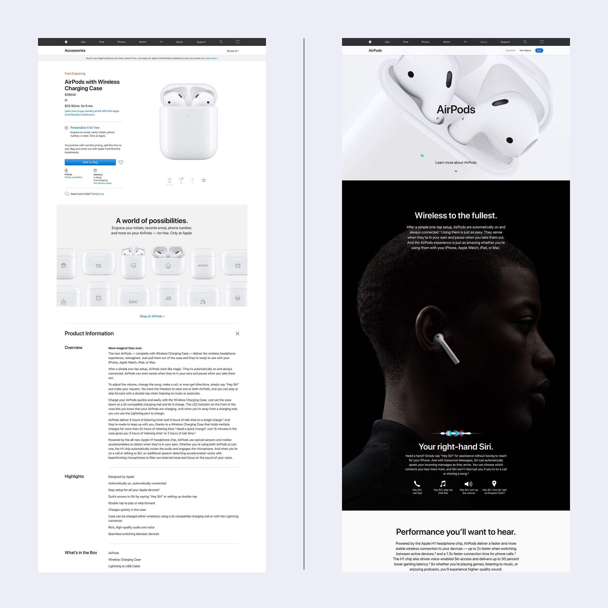

Класифікація сайтів
Презентаційні сайти
Як правило за замовчуванням під словом «сайт» клієнти розуміють саме презентаційний сайт.
Назва цього типу цілком відповідає його призначенню. Завдання презентаційних сайтів — представляти компанію чи продукт. Ще можна сказати, що презентаційний сайт — це офіційне представництво компанії чи бренду в інтернеті.
Презентаційні сайти складаються з кількох розділів. Як правило, серед них є розділ з інформацією про компанію, розділ з описом послуги чи продуктів компанії та контактний розділ. На сайтах креативних компаній цей перелік доповнює портфоліо.
На презентаційних сайтах також часто трапляється розділ з новинами компанії, в якому публікують офіційні сповіщення та пресрелізи, а в деяких випадках — блог компанії.
Ще такі сайти називають «корпоративними сайтами» та дещо рідше «фірмовими».
Англійською: corporate websiteПосадкові сторінки
Поширена думка, що посадкові сторінки — це односторінкові сайти, є частково помилковою. «Посадковими» їх називають через те, що на них «сідає» рекламний трафік. Тож насправді будь-яка сторінка, що прив’язана до рекламної кампанії, є посадковою за визначенням.
Раніше рекламний трафік часто направляли на типові сторінки продукту в онлайн-каталозі. З метою економії, для смартфонів (скажімо, iPhone) та пилосмоків використовувався однаковий шаблон. Через те, що їхня структура була типовою, а опис продуктів загальним та беземоційним, ефективність реклами була низькою.
Щоб підвищити цю ефективність продукти та послуги й почали просувати за допомогою окремо створених сторінок. Власна, часто відмінна від інших сторінок структура дозволяла описати продукт більш якісно та з урахуванням індивідуальних особливостей цього товару та послуги.
І хоч формально обидва типи сторінок можуть бути посадковими, цілком зрозуміло, яка з двох сторінок виконуватиме своє завдання ефективніше.
Часто посадкові сторінки називають «лендінги», але іноді саме їх мають на увазі, використовуючи термін «односторінковий сайт».
Англійською: landing pageОнлайн-сервіси
Онлайн-сервіси — це сайти, які надають користувачу ті чи інші послуги онлайн. Розуміємо, опис дещо загальний. Але й послуг у світі існує чимало, а значить, онлайн-сервісів теж може бути сила силенна.
От, наприклад, Gmail — це онлайн-сервіс з отримання та відправлення електронної пошти. Megogo — це онлайн-сервіс з перегляду відеоконтенту (а з недавніх пір ще й для прослуховування аудіоконтенту). Google — це теж онлайн-сервіс, він надає послуги з пошуку інформації.
Часто для того, щоб якось впорядкувати таке розмаїття іменник «сервіс» супроводжує описовий прикметник. Наприклад, «стрімінговий сервіс», «файлообмінний сервіс» або «платіжний сервіс».
Вебсервіси ще можуть називати «вебзастосунками», «сервісними сайтами» чи «онлайн-платформами».
Англійською: online service, web application, online platform.Інтернет-магазини та торговельні майданчики
Інтернет-магазини — це теж онлайн-сервіси, для продажу послуг чи товарів. Але їх існує так багато, що здається логічним виділити такі вебсайти в окремий тип.
Перші інтернет-магазини з’явились ще у дев’яності роки. Тоді вони сприймались дещо маргінальними, адже аудиторія інтернету була набагато меншою ніж сьогодні, а звичка купувати речі онлайн у людей ще не з’явилась. У порівнянні з великими книжковими магазинами, що існували в реальному світі, онлайн-книгарня Amazon, запущена у 1995 році, сприймалася як дрібна крамничка.
Сьогодні ж Amazon — одна з найдорожчих у світі компаній, що продає не лише книжки, а взагалі будь-що онлайн. На додачу до цього Amazon дає можливість майже кому завгодно продавати на своїй платформі продукти та послуги.
Такий приклад — не лише всесвітньо відома історія успіху, але й модель поступової еволюції інтернет-магазину у торговельний майданчик. В Україні подібний шлях пройшов інтернет-магазин Rozetka.
З точки зору дизайну в інтернет-магазинах і торговельних майданчиках найбільш важливими є сторінки каталогу товарів, окремого товару та всі екрани, пов’язані безпосередньо з покупкою. Насправді кількість нюансів у такому типі проєктів настільки значна, що досить часто фахівці, які працюють з інтернет-магазинами, згодом фокусуються саме на них.
Інтернет-магазини ще часто називають онлайн-магазинами та дещо рідше «ікомерс-проєктами» чи «маркетплейсами».
Англійською: e-commerce, online-shop, online-marketplace.Медіаресурси та блоги
Медіаресурси та блоги — це вебсайти, де публікуються інформаційні матеріали.
Онлайн-медіа часто є цифровим представництвом медіа з реального світу. Журнали Vogue чи New Yorker, газети Washington Post чи Daily Mirror існували ще до появи всесвітньої павутини. З її появою їм довелось пройти шлях оцифровування редакцій та редакційних процесів. І здебільшого класичні медіа, хоч і через тривалий час, адаптувались до цифрових реалій.
Разом із тим, із появою інтернету, з’явився новий феномен: блогінг. Це слово походить від словосполучення «web log», яке можна перекласти як «ведення онлайн-щоденника». Вважається, що першим почав вести такий онлайн-щоденник Тім Бернерс Лі, засновник всесвітньої павутини. Спочатку блоги дійсно були онлайн-щоденниками, в яких люди ділились власним досвідом. Часто якість текстів у блогах була нижчою, ніж в професійних медіа через відсутність коректора чи редактора.
Тепер межа між сучасними онлайн-медіа та блогами поступово зникає, адже з одного боку посеред редакційних матеріалів ЗМІ часто публікують приватні блоги, а з іншого, сучасні блоги тяжіють до більш професійної та якісної роботи з контентом.
З точки зору дизайну в онлайн-медіа найважливішими є сторінка зі списком матеріалів та сторінка статті.
Медіаресурси часто називають «новинні портали», рідше — «онлайн-медіа», «електронні ЗМІ» чи «онлайн-ЗМІ».
Англійською: news portal, online media.Додаткові типи ресурсів
В попередньому розділі ми описали найбільш типові проєкти, з якими доводиться мати справу вебдизайнерам. На додачу до них хочемо відзначити ще декілька видів проєктів, які трапляються в роботі дизайнерів рідше, але все ж заслуговують на те, щоб приділити їм трохи уваги.
Форуми
До появи соціальних мереж онлайн-форуми були, певно, головним форматом спілкування людей в інтернеті. Свою назву вони запозичили з латинської мови. В часи Римської імперії «форумом» називали головну площу міста, на якій відбувались обговорення нагальних питань міщан.
Цифрові форуми були різноманітними та й питання там обговорювались різні. Фанати творів Девіда Лінча на форумах, присвячених його творчості, намагались віднайти приховані сенси лінчівського символізму, на технічних форумах обговорювались, відповідно, питання технічних характеристик та переваг тієї чи іншої техніки, на розробницьких — програмні продукти. Ну, а на суспільно-політичних форумах запекло сперечались стосовно того, що вважати зрадою, а що — перемогою.
Цифрові форуми не зникли, але суттєво втратили популярність. І дизайнерам взаємодіяти з ними доводиться рідко.
Чати
Ще одним популярним місцем спілкування, окрім онлайн-форумів, були чати. Якщо на форумах часто доводилося довго чекати на відповідь, то в чатах спілкування відбувалось в режимі реального часу. Як технологія вони не зникли, а навпаки — серйозно розвинулись.
По-перше, вони еволюціонували в месенджери, такі як телеграм, facebook messenger, whats app. По-друге, чати стали ефективним інструментом технічної підтримки. По-третє, чати стали додатковим засобом комунікації всередині цифрових продуктів — наприклад, ігор, у якості окремих функціональних елементів.
Портали
Ще один специфічний різновид вебпроєктів — так звані портали.
Часто портали — це великий вебсайт, що об’єднує низку сервісів. Або, простою мовою, це вебсайти «про все одразу». Деякі портали могли одночасно містити пошук, електронну пошту, агреговану стрічку новин, прогноз погоди, гороскопи, опитування. Так працювали bigmir.net та ukr.net.
З появою соціальних мереж популярність таких порталів поступово згасала. Але тематичні портали продовжують існувати та розвиватись. Наприклад, новинні медіа часто є по суті новинними порталами.